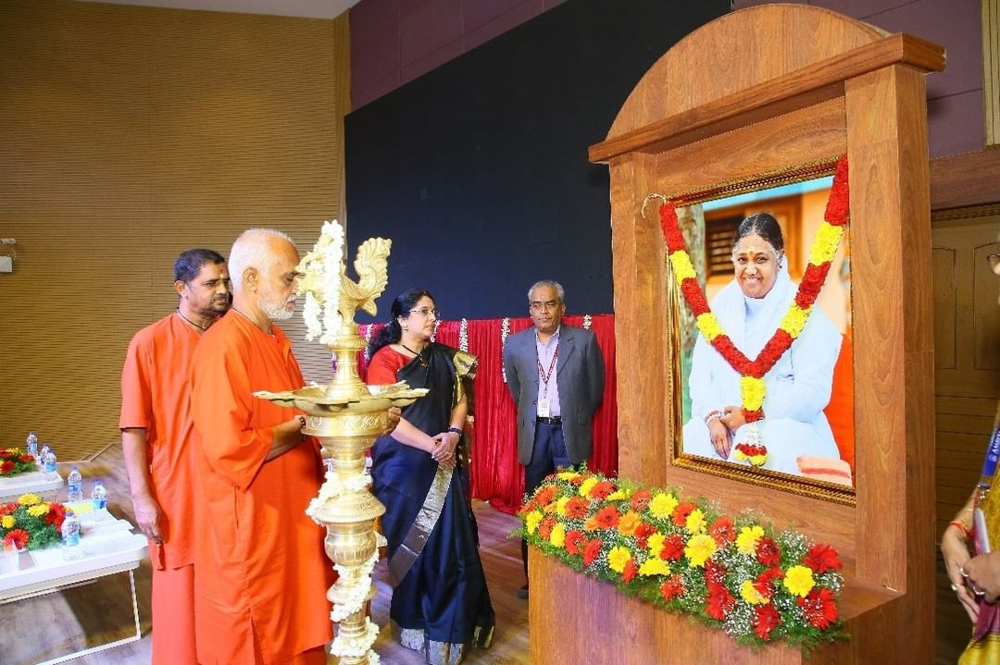

| About Conclave Cyber Conclave is a type of conference in which group of dignitaries and experts join together to discuss about the field of Cyber Security Challenges and Upcoming Trends. |
||
| Events Topics and Session : | ||
| Panel I Cyber Threats:An Emerging Global Challenge |
||
| Panel II Technological Solutions And Directions to Secure Cyberspace |
||
| Panel II Role Of Academia in Strengthening Cyber Security |
| SPEAKERS |
Dr S.A.V. Satyamurty Distinguished Scientist, Director of Research, Vinayaga Missions Research Foundation and Former Director, IGCAR. |
Mr. Kottaram V Ramesh, Director & Chief Vision Officer at SkillsDA |
Prof Dr. Sethumadhavan Head, TIFAC Core in Cybersecurity, Amrita Vishwa Vidyapeetham, Coimbatore |
Dr. Siraj Rahim Privacy Program Manager at ZOHO corp. DGM - Operation Technology, MRF Limited, Chennai |
 |
 |